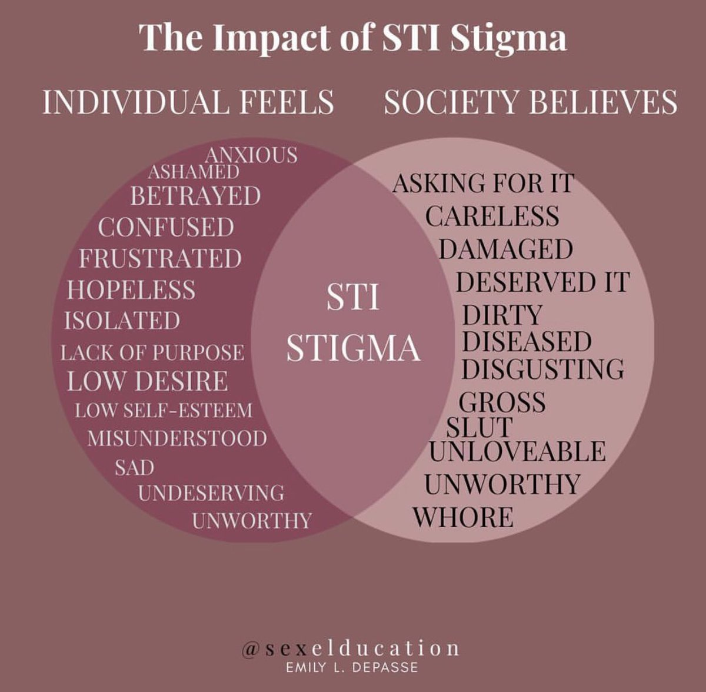

A Manifesto on Pleasure and Self-Love for We With an STI
by
I see you. You with the tear-stained cheeks. You, with your legs crossed in front of your full-length mirror. You with the repetitive, “If only I’ds--.” You with the fearful doubt of any future partnered sexual experiences and relationships. You, after you received your diagnosis.
I empathize with your self-loathing and shame. I understand the negotiation between your ever-present confusion and your desperation for answers. I know what it’s like to question your value in your friendships, relationships, and your purpose in this world.
“This looks herpetic.”
At 22 years old, I was diagnosed with genital herpes. Although the herpes simplex virus (HSV) is not a life-threatening infection, I felt as though my life was over as soon as the words left the nurse’s lips. My diagnosis quickly equated itself with a relationship’s death sentence. “I knew better,” I thought to myself. As someone with an undergraduate background in human sexuality, the stigma repurposed itself in a reflection of my intended career. I questioned my worth in the sexuality field. I stopped going to work.
I stopped investing in my self-worth. I buried my sexuality. I buried myself.
Although much of what I knew my purpose to be was placed in limbo, I unknowingly found a resurgence of self through research. My then-partner wanted nothing to do with my findings, but I became consumed. Forums, blogs, social media, research journals, and government agencies—it didn’t matter. I wanted to know everything and anything about herpes and its stigma. My in-bed-by-8 PM bedtime routine was replaced with researching until 2 AM.
I learned about the different types of herpes, and that HSV-1, the virus most commonly associated with cold sores, could be transmitted genitally as genital HSV-1. I learned that HSV is a member of the virus family that causes chicken pox and mono (aka herpesviradae). I learned that I would likely not know the type of herpes that I had until those antibodies could be detected through my blood work. I learned that those results really didn’t matter.
I learned that the person who I so wanted to be there for me, the person that I hoped would answer all of my questions, the person that I hoped would answer my late-night call, the person I hoped would be there with me until the end, wasn’t someone that I could depend on in the long-term. Along with accepting my herpes status, I came to accept that this person didn’t serve a place in my life. As he made his exit, I slowly re-centered myself. His absence unveiled a longing for something that was bigger than my being. Something that I felt that every herpes and STI positive person should know, accept, and welcome. Something like this…
Learn to Manage Your Outbreaks, Not Fear Them
Don’t let the Instagram advertisements and comments convince you otherwise. There is currently no cure for the herpes simplex virus—but it’s also nothing to fear. Although there is currently no cure for herpes, it is manageable. Since my diagnosis in July 2015, I remained asymptomatic until early 2019. 2019, a year defined by an ex-partner’s unemployment combined with the responsibilities of full-time job, an internship, graduate school coursework and an eventual breakup; a year summarized through perpetual stress and emotional upheaval. As I reflect upon 2019, it’s unsurprising that this is the year with the most symptomatic outbreaks, as stress is a trigger for herpes.
Each person will experience their own set of triggers — things that cause felt or visible symptoms, including outbreaks — and symptoms. Some of those will reach the surface while others will remain asymptomatic. Regardless of what your triggers might be, it’s important to allocate time during outbreaks to self-care. Instead of viewing an outbreak as a burden or dreadful experience, I’ve come to recognize them as reminders to slow down and allocate additional time for me. Sometimes this looks like taking a bubble bath, while other times this looks like curling up in bed with my cat, fluffy pillows, and a good book. Outbreaks can present an opportunity to experience ourselves and celebrate our bodies in a new light if we learn to look beyond the stigma.
Don’t Settle
When you’re first diagnosed with herpes, or any sexually transmitted infection (STI), sex and dating can feel daunting, limited, and nearly, if not, impossible. Whether you’re in a committed relationship, are almost dating, or single, finding the “right” words to disclose often falls short. “They’ll think I cheated on them. They’ll never understand. Where do I even start? What if it originated with them? I don’t want them to feel this pain. What if they no longer want to see or spend time with me? What if I’m not enough…”
Dating websites made exclusively for folks with STIs might be tempting. They’re marketed as safe spaces for STI-positive folks to find love and avoid rejection by removing disclosure from the equation. Ultimately, though, I think these networks work to affirm stigma, rather than reduce or dismantle it. These websites and applications typically eliminate disclosure upon admission by asking for users’ STI status and diagnosis. In these networks’ efforts to market a safe space, they define STI positive folks as an “other,” a community unworthy of love and affection outside of their diagnosis. As much time as this population works to separate their identities from their STI, these dating applications reinforce and can even delay the connection with others, but more importantly, with the self.
You’re Worthy of Sexual Pleasure From Partners and Yourself
Society often views sexuality through a monogamous, partnered lens, especially when STIs enter the conversation. While many appreciate and enjoy partnered sex, a partner is not necessary to achieving sexual satisfaction with (or without) an STI. What often remains absent from the conversation is the pleasure that can be found within.
STI positive folks are constantly discredited, equated as punchlines, and marked as ‘damaged goods’ through media and social circles misrepresentation and miseducation. It’s not uncommon after a positive STI diagnosis to seek validation and sexual worth through another person when the stigma echoes and reinforces the opposite. No matter your relationship or STI status, STIs should be a point of conversation for all partners, but not a sole determinant of your pleasure or sexual worth.
Redefining yourself as worthy might not come easily after your diagnosis. It will likely take time. It will take time to unlearn the origination of stigma. ( This piece from Leah Berkenwald here on Scarleteen is one good place to start.) It will take time to muddle through your feelings, desires, and thoughts. It will take time to really center back with yourself. When it comes to this journey, the opportunity for pleasure will always be waiting when you’re open to its reception.
Sex Re-Education Isn’t Your Responsibility
Most school-based sex education curriculums in the United States only cover the surface of sexually transmitted infections. You know, the outdated, extreme photos of folks’ genitals and the presenting symptoms associated with each STI. While instructors may review statistics and barrier methods that aid in STI prevention, they rarely prepare students for their chances of contracting an STI and how best to navigate conversations with their partners. Educators are often not bold enough to share that internal and external condoms are not enough. They often won’t say that 50% of the classroom will likely contract an STI before they turn 25, or that STIs are usually either curable and manageable, and nothing to fear. They won’t often cop to their reactions of panic and disgust as internalized constructions of shame and mechanisms of stigma. They often won’t say that the stigma around STIs is unnecessary, unhelpful and something worth discussion in comprehensive classrooms.
The hours, days, and weeks I spent researching transmission rates, statistics, and testing around herpes served as what I label as the beginnings of my own sex re-education. After a positive diagnosis, it’s natural to want to know more than what the doctor or pamphlet says. It’s expected that you’ll experience some level of fear in the unknown and what it means for you, your partners, and even your future. Unfortunately, most current sex education systems fail to prepare students for these very real moments in our sexually active lives. This leaves a handful of open-ended questions; some that have an answer, and others that remain settled upon acceptance in uncertainty.
As you work through your sex re-education and confront potential disclosures, you’ll wonder about just how much to share with your partners. Like our sexual response systems, it’s expected that you will likely know more about your STI than your partner, however, it is not your sole responsibility to assume all the labor as the sex re-educator to your partners.
In disclosures, whether in person or via text message, I find it helpful to provide partners with various resources through a simple equation: one organization resource, one article, and one media recommendation. For example, an organization resource like the American Sexual Health Association (ASHA), an article that displays a personal narrative or message you’d like to convey to your partner about living with your STI, and a media resource, like Ella Dawson’s TEDx Talk. LaChrista Greco also offers some extra input on disclosures and educating partners on Scarleteen here.
It’s expected that your partner may have additional questions for you beyond your chosen resources, but presenting them with the opportunity to self-educate, and re-educate themselves, allows for a more personal application and reflection. This exchange of information and research ultimately leads to the development of the foundational support skills necessary for your partners to actually be a partner to you. Although your partner may not experience your STI or completely understand what it’s like to live with one, they learn your story and the emotions—the ups, downs, and in-betweens—that come along with your diagnosis. During the moments that you thought you’d always be alone, they offer you a hand, a hug, and a holding space.
A Love Letter to Ourselves
When I travel back to my diagnosis and the days, months, and now, years that followed, I recognize the opportunity that accompanied its arrival. Despite the initial shame, guilt, name calling, jokes, and fear related to disclosure, my STI presented me with a chance to love myself more deeply. It gave me a chance to sit with myself, who I thought myself to be, who I thought I was going to become, and who I really was. It took me months to really look at myself in the mirror. To name my features, to not piece apart my body or what I felt its worth to be after my diagnosis. I sat somewhere between my positive herpes status and identity negotiating the relationship between the two.
Somewhere within that inner work, launched acceptance. An acceptance far greater than the questions without answers and the partners who may respond with rejection. An acceptance that sourced much deeper than the infection beneath my skin. An acceptance and welcoming of a self that had been waiting for freedom from more than a positive STI diagnosis. A self I waited over twenty-two years to release. That acceptance is waiting for you, too.
More like This
- Page 1
- ››